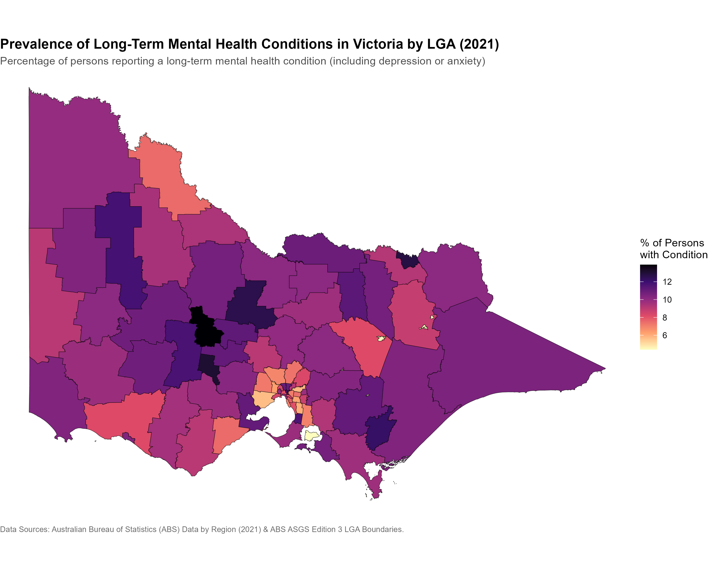

Note: The reproducible R script for this exercise (mod8.R) is saved directly in the "Module 8 - Portfolio Exercise" RMIT OneDrive folder.
Module 8 required linking tabular data to geospatial boundary files to construct a choropleth map in R. I mapped the 2021 prevalence rates of long-term mental health conditions (including depression and anxiety) across Victorian Local Government Areas (LGAs) using spatial shapefiles and health statistics from the Australian Bureau of Statistics.

Figure 1: Victorian Local Government Area choropleth map displaying long-term mental health condition prevalence rates (Data year: 2021).
The map displays noticeable regional variation in long-term mental health reporting across Victoria. Inner-city and metropolitan Melbourne LGAs generally exhibit lower reporting percentages (appearing in lighter yellow tones), whereas higher prevalence rates appear in central Victoria and selected eastern LGAs (represented by darker purple and black shading).
STE_NAME21 == "Victoria").left_join().magma colour scale from the viridis package with a clean void theme (theme_void()) to maximize visual contrast and maintain colour-blind accessibility.magma palette.A primary limitation of this choropleth map is large area prominence: geographically expansive rural LGAs dominate the map visually, whereas small, high-density metropolitan LGAs around Greater Melbourne are difficult to inspect without zooming or inset panels.
| Field | Description |
|---|---|
| Title | Victorian LGA Mental Health Condition Prevalence (2021) |
| Summary | Choropleth map displaying the percentage of persons reporting long-term mental health conditions (depression or anxiety) across Victorian Local Government Areas for Data year 2021. |
| Data Sources |
1. Australian Bureau of Statistics. (2021). Local Government Areas - Australian Statistical Geography Standard (ASGS) Edition 3 [Data set]. ABS. https://www.abs.gov.au/statistics/standards/australian-statistical-geography-standard-asgs-edition-3/jul2021-jun2026/access-and-downloads/digital-boundary-files 2. Australian Bureau of Statistics. (2025). ABS Health and disability (Data by region) LGA November 2025 [Data set]. Digital Atlas of Australia. https://digital.atlas.gov.au/datasets/812805165f4046419f7e5a0c1f933526_0 |
| Mapping | Variables mapped: geometry (LGA boundaries) and Mental health condition (%) (fill colour intensity). |
| Important Notes | Non-spatial council categories ("No usual address" and "Migratory/Offshore") were removed prior to plotting to ensure valid spatial rendering across all 80 Victorian spatial areas (79 LGA councils plus "Unincorporated Vic"). Data year: 2021. |
| Access |
Boundary shapefile download: ABS ASGS Edition 3 Digital Boundaries Health CSV layer download: Digital Atlas of Australia Health Layer |
Anthropic. (2026). Claude [LLM]. https://claude.ai
Australian Bureau of Statistics. (2021). Local Government Areas - Australian Statistical Geography Standard (ASGS) Edition 3 [Data set]. ABS. https://www.abs.gov.au/statistics/standards/australian-statistical-geography-standard-asgs-edition-3/jul2021-jun2026/access-and-downloads/digital-boundary-files
Australian Bureau of Statistics. (2025). ABS Health and disability (Data by region) LGA November 2025 [Data set]. Digital Atlas of Australia. https://digital.atlas.gov.au/datasets/812805165f4046419f7e5a0c1f933526_0
AI assistants was used during this exercise: Anthropic's Claude. I provided the initial project direction, suggesting Victorian LGAs as the focus, selecting the ABS boundary and Digital Atlas data layers, and defining the step-by-step procedure. Claude provided assistance with the sf package functions, including spatial filtering syntax, and setting up the left_join() between the shapefile and CSV data.